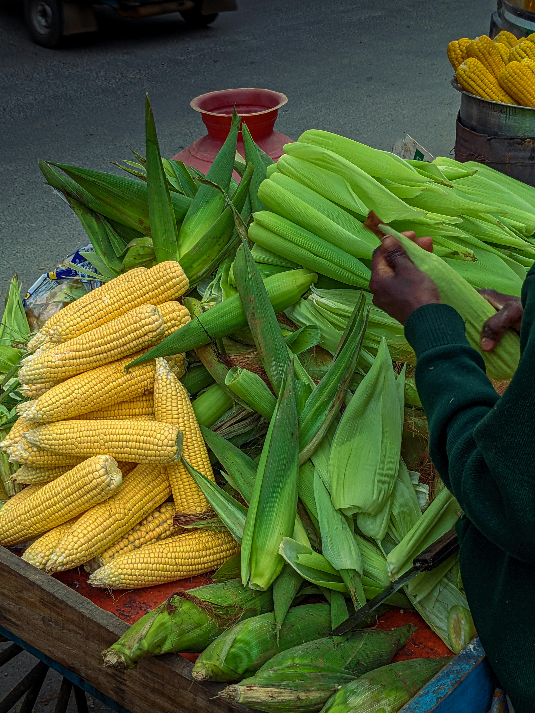
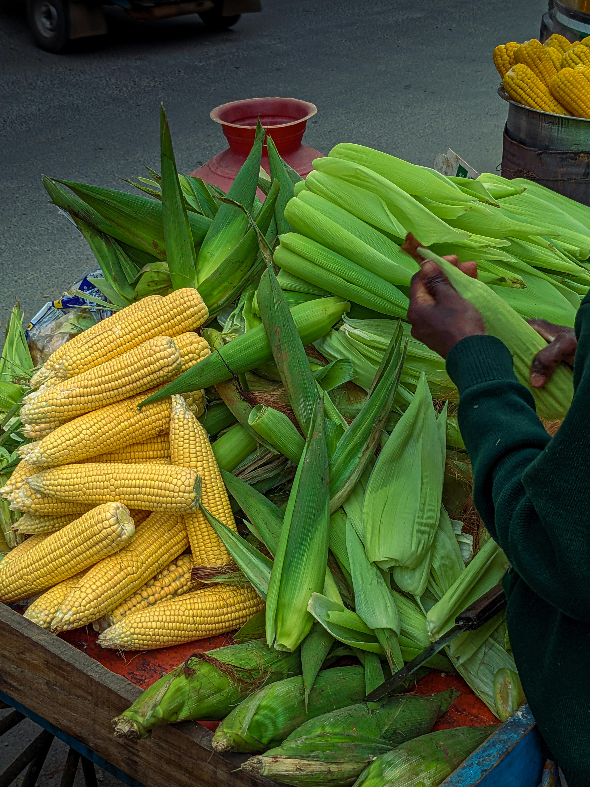

Trans-nzoia County Farmers Census
be the change makerBe counted as a Farmer
Trans Nzoia County, situated in western Kenya, is renowned for its agricultural productivity, largely due to its rich soils and favorable climate. The county primarily focuses on the cultivation of maize, which serves as a staple food and is often referred to as Kenya’s "breadbasket." Additionally, farmers grow other significant crops, including sugarcane, beans, sorghum, millet, and sunflowers, with each contributing to both local consumption and export markets.
Most farming in Trans Nzoia is conducted by smallholders who rely on subsistence agriculture. However, there is also a segment of commercial farming that produces goods on a larger scale for local and international markets. To enhance soil health and mitigate pest issues, many farmers practice crop rotation and diversification, which are vital for sustainable agriculture in the region.
 
